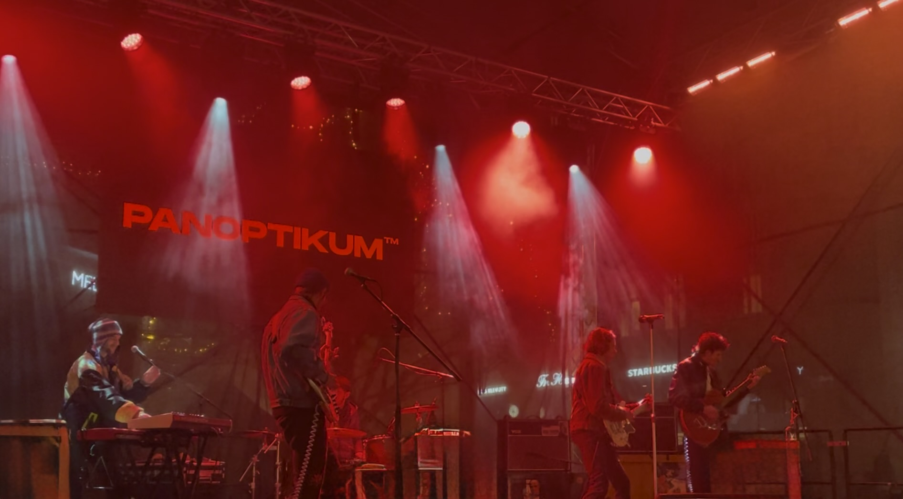

Topluluklarım
Ankarock, UNIROCK, ESN ve Spotify üzerinden yürüttüğüm sosyal çalışmalar.

Gezi
Kişisel rotalarım, seyahat notlarım ve Erasmus+ projeleri.

Sosyal Blog
Müzik, etkinlikler, geziler ve günlük hayatımdan notlar.
Topluluklarım
"The most beautiful emotion we can experience is the mysterious. It is the fundamental emotion that stands at the cradle of true art and true science."
- Albert Einstein
Üniversite hayatımı sadece akademik bir süreç olarak görmedim; ilgi alanlarım doğrultusunda kendimi kültürle, müzikle, ulusal ve uluslararası alanlarda besleyebileceğim her fırsatın peşinden koştum. Bir enstrüman çalmasam da her zaman çok iyi, sadık ve tutkulu bir dinleyici oldum. Müziğe olan bu bağımı, toplulukların mutfağında yer alarak, yönetim ve organizasyon işlerinde olabildiğince faydalı olmaya çalışarak somutlaştırdım. Bu sayfada üniversite hayatımın bu dinamik yönünü, parçası olduğum ve büyütmek için emek harcadığım oluşumları size olabildiğince kendi penceremden aktarmaya çalışacağım. Ayrıca müzik benim için sadece bir dinleme eylemi değil, aynı zamanda en büyük hobilerimden biri olan çalma listeleri (playlist) hazırlama süreciyle hayatımın merkezinde. Spotify’da oldukça aktifim; eğer müzik zevkimi ve oluşturduğum çalma listelerini incelemek isterseniz sayfanın en altındaki bölümden Spotify hesabıma ulaşabilirsiniz.
Ankarock & Metal Müzik Topluluğu

Ankarock Tanışma Etkinliği - 25.10.2023
Ankara Üniversitesi bünyesinde temellerini attığımız Ankarock, rock ve metal müziği sadece bir janr olarak değil, insanları bir araya getiren birleştirici bir kültür olarak gören bir öğrenci topluluğudur. Amacımız; kampüs sınırları içinde ve ötesinde rock, metal, blues ve caz gibi köklü müzik türlerine gönül vermiş dinleyicileri ortak bir paydada buluşturmaktır. Bir enstrüman çalsın ya da çalmasın, bu müziğin felsefesini seven herkes için samimi, özgür ve kapsayıcı bir topluluk alanı yaratmak adına konserlerden söyleşilere, festival organizasyonlarından dinleti gecelerine kadar tüm süreçlerin mutfağında aktif olarak yer alıyorum. Bu hedefle kurulan Ankarock'ı her geçen gün daha da büyütmeye ve Ankara'nın o kendine has, köklü rock/metal damarını canlı tutmaya devam ediyoruz.
Neler Yapıyoruz?
Ankarock çatısı altında müziği ve kültürü sadece tüketmiyor, onu hep birlikte üretiyoruz. Kampüsteki bağlarımızı güçlendirmek ve bu kültürü canlı tutmak için düzenli olarak hayata geçirdiğimiz bazı temel etkinliklerimiz:
- • Tanışma Toplantıları: Dönem başlarında ve belirli aralıklarla bir araya geldiğimiz, topluluğa yeni katılan dostlarımızla tanışıp büyük bir aile olduğumuzu hissettiğimiz, samimi bağların temelini attığımız kitlesel buluşmalar.
- • Jam Session: Enstrümanını kapanların sahneye çıktığı, doğaçlamalar ve müzikal etkileşimin ana amaç olduğu, müzisyenlerle dinleyicileri en yalın haliyle buluşturan interaktif etkinlik.
- • Rock & Metal Talks: Sadece dinlemekle kalmayıp müziğin felsefesine de indiğimiz özel oturumlar. Bu sohbetlerde bir araya geliyor; belirli bir albümü, dönemi, grubu ya da müzikal akımı masaya yatırarak derinlemesine tartışıyoruz.
Ayrıca sosyal medya hesaplarımız üzerinden gelecek etkinliklerimizi takip edebilir, Ankara'daki yerel konserler için düzenlediğimiz çekilişlere katılabilirsiniz. Eğer Ankara Üniversitesi'ndeyseniz doğrudan topluluğumuza üye olabilir, değilseniz de üye olmadan tüm etkinliklerimize katılabilirsiniz. Önceki dönemlerde benim de yazdığım, albüm ve sanatçı incelemeleri konseptindeki "Ankarock Kült" serimizi okumak ya da ekibe katılarak kendi yazılarınızı yayınlamak isterseniz aşağıdaki linkten bize ulaşabilirsiniz.
UNIROCK
Yaklaşık iki yıldır bir araya gelen farklı üniversite rock toplulukları olarak, alt kültürlerin bir arada barınabileceği güvenli alanlar yaratmak ve rock kültürüne daha büyük ölçekte katkı sağlamak amacıyla UniRock çatısı altında birleştik. Rock müziği ve tüm alt türlerini yaşatmak için ortaklaşa çalışıyor, bu kültüre gönül vermiş herkesle dayanışma içinde olmaktan gurur duyuyoruz.
Ben de bu kolektif yapıda Ankarock Temsilcisi olarak yer alıyor; UniRock oluşumunun kuruluş aşamalarından itibaren etkinliklerin planlanması, koordinasyonu ve saha süreçlerinde aktif olarak destek sağlıyorum.
Yakın dönemde hayata geçireceğimiz ortak konserler, atölyeler, söyleşiler ve daha bir çok kitlesel etkinlikten haberdar olmak için UniRock oluşumunu aşağıdaki linkten takip edebilirsiniz.
ESN (Erasmus Student Network)
ESN (Erasmus Student Network) Nedir?
Avrupa'nın en büyük disiplinlerarası öğrenci organizasyonlarından biri olan ESN; yükseköğretimde uluslararasılaşmayı destekleyen, kültürlerarası entegrasyonu sağlayan ve küresel akran rehberliği (peer-to-peer-support) modeliyle dünya vatandaşlığını teşvik eden devasa bir gönüllülük ve diplomasi ağıdır.
Kendi Erasmus+ deneyimimin ardından, Ankara'ya değişim programlarıyla gelen yabancı öğrencilerin şehre, kültüre ve akademik ortama uyum süreçlerine rehberlik edebilmek adına harekete geçtim. Bu doğrultuda Ankara'nın en köklü ve en büyük yerel birimi olan ESN Ankara Üniversitesi bünyesine katıldım. Şu anda aday üye olarak topluluğun etkinliklerine katılıyor, yabancı öğrencilere rehberlik ederek bu güzel ekibe elimden geldiğince destek olmaya çalışıyorum.
Spotify
Gezi
"Travel is not just a change of scenery; it is a change of perspective. Mathematics is much the same; it takes you to mental landscapes you have never visited before."
— Henri Poincaré

Sosyal Blog
Katıldığım etkinlikler, gezdiğim yerler, müzik ve günlük hayatıma dair anılar ile ilgimi çeken konuları paylaştığım bölüm.

12.12.2025 - Namesti Svobody - BRNO
Çekya’daki Erasmus dönemimde en çok eksikliğini hissettiğim şeylerden birisi canlı müzikti. Türkiye'de her hafta underground ve lokal grupların konserlerine giderken orada bundan tamamen uzak kalmış gibiydim. Kendi tarzımda mekanlar buluyordum ama hem sınırlı sayıda arkadaşım vardı hem de tek başıma gitmeye çekiniyordum. Erasmus’un 4. ayında, aşırı soğuk bir kış günü Christmas markette gezerken bir grubun soundcheck aldığını gördük. Arkadaşımla kalıp dinlemeye karar verdik ve çaldıkları şeylere bayıldık. Şansımıza sonraki hafta bir konserleri daha vardı ve ona da gittik. O gün, tek başına ya da aniden gelişen bir şeylerin peşine takılıp gitmenin aslında ne kadar güzel olduğunu fark ettim. O günden beri neredeyse her gün Panoptikum dinliyorum. Böylece hem o çekingenliğimi kırdım hem de listelerime Çekçe rock katmış oldum. Gruba şans vermek ve dinlemek isterseniz Instagram ve Spotify bağlantılarını buraya bırakıyorum: